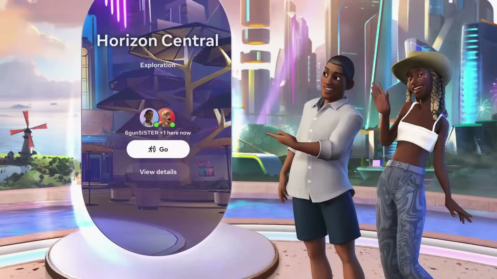

Horizon Portals were a new way to travel between experiences in Meta Horizon. In 2024, I led content design for the portal's information model: what someone needed to know about a destination, when that information should appear, and which choices would help them decide whether to go.
The work included travel principles, metadata, terminology, and alignment across product surfaces. I worked with product design, art direction, UX research, engineering, and localization. The portal was introduced at Meta Connect 2024. Later experiments found increased Horizon activity and time spent, alongside a more complicated result for first-run completion.
Travel decisions
An early portal could show a clipped destination name without telling someone much about what was on the other side. Stepping through counted as an entry even if the person had arrived by accident and immediately left. That made entries an incomplete account of whether the portal was helping.
I argued that the portal should help someone reach a state of intent before traveling. They needed enough information to decide whether the destination suited what they wanted to do. Deciding to stay could be a useful outcome too, because it avoided an unwanted trip.
The questions varied by context. A portal at home might introduce an unfamiliar world. One inside a world could offer somewhere related to go next. A portal created by a friend had to preserve the social context: who was going, where they would end up, and whether there was room for them.
Information model


I developed the metadata framework through research, travel scenarios, and frequent alignment with the team. We worked through which information needed to remain consistent and which could change with the destination or situation.
- Destination
- The world's name, type, and genre help someone understand what they could do there.
- People
- Friends present, recent visitors, and population give the destination a social context.
- Preview
- A view into the experience, with effects and sound, helps someone judge what the place is like.
- Choices
- Go starts travel. View details lets someone investigate first. Temporary portals can also offer Hide.
Proximity helped us manage attention. Someone farther away needed to recognize the destination; approaching or aiming at the portal could reveal more context and an action. The information model also had to work across portal types, so its layers weren't a universal rule that assigned every field to one fixed distance.
Go and View details
Go and View details served different decisions. Someone who had already decided could travel immediately. Someone close to deciding could inspect the destination before committing.
I argued for retaining View details when partners worried that more information would reduce entries. The entry count alone couldn't tell us whether the trip had been worthwhile. Giving someone enough context to choose was part of the travel experience, even when they chose another destination.
Physical form and localization
The art director wanted the portal to feel wondrous. I asked the team to think about their tenth flight: the view might have lost some novelty, but they still cared where the plane was going. UX research and leadership feedback about travel decisions helped me make the case for useful information in the leads review.
The product designer and art director owned the portal's physical placement and proportions. My role was to establish what its surface needed to communicate and help the team make room for it.
That room became tighter when world creators gained two more metadata fields. I worked with localization specialists to test the longest translations and with designers on other travel surfaces to keep destinations recognizable wherever someone encountered them. The framework had to survive different languages and real destination content.
Launch and results
Before Connect, I shared the portal strategy with the onboarding team so they could prototype education for it. Following the introduction, I continued working with the product designer on terminology and additions to the portal surface.
Adding Go improved first-run completion within the portal experience from 55% to 76%. The experience without a portal still reached 80%, so the improvement didn't put the portal ahead of that control.
A separate comparison tested the portal with Go against no portal. Monthly and weekly active use rose by about 7–8%, time spent by about 4%, and next-day retention by about 3%. There was no established retention improvement at two or four weeks.
These results belong to the portal experience as a whole. The experiment didn't isolate the effect of the metadata, proximity behavior, physical form, or View details. It showed that the new travel surface could increase activity while still leaving work to do on the first-run journey.
Related work
Main article: Meta Horizon NUX
New users met the portal too, and the experiment counted how many of them finished their first run. In 2025, I worked on that first run directly. Meta Horizon NUX replaced a welcome world full of instructions with a just-in-time education strategy: let people enter a world, then teach a control when they had a reason to use it.
Both projects turned on when information should appear. A portal showed more as someone approached it. First-run education waited until someone needed a control.